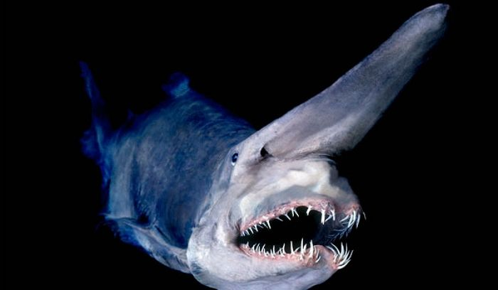
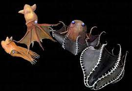
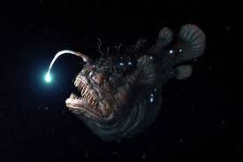
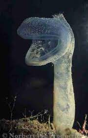
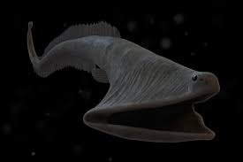
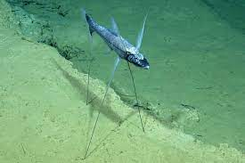
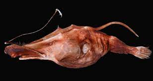
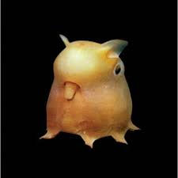
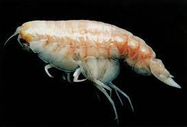
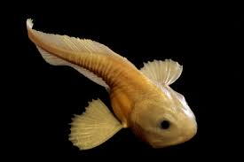

배럴아이
Barrel Eye
이 기괴한 머리통을 가진 생물의 눈은 어디일까.
놀랍게도 입 위의 두 구멍은 콧구멍이며 투명한 머리 안
초록색의 구체 두 개가 배럴아이의 눈이다.
이 눈은 두개골에 고정되어 있으며 전방을 다 살필 수 있어 시야가 굉장히 넓다.
빛이 희박한 박광층에 사는 어류들은 이처럼 희박한 빛을 최대한 모으기 위해 눈이 특화되어
시신경이 고도로 발달한 경우가 많다.
배럴아이 역시 위쪽에서 들어오는 빛을 모으기 위해 이와 같은 형태의 머리와 눈을 갖게 되었다.
마귀상어
Goblin Shark

일본에서 최초로 발견되었으며, 중심해의 비교적 상층에 서식한다.
몸길이 평균 3m 정도의 중형 상어에 속한다.
먹이를 먹을 때 턱이 앞으로 튀어나온다.
코의 "로렌치니 기관"으로 전기를 감지해 사냥하는것이 특징이다.
중생대에 살던 scapanrhynchus의 후손으로 여겨지는데, 그 모습이 거의 변하지 않아
살아있는 화석으로 불리기도 한다.
흡혈오징어
Vampire Squid

눈의 발광기를 이용해 짝을 찾고 먹이를 유인한다.
포식자가 나타나면 양말을 뒤집듯 다리를 머리 위로 까뒤집는데,
이는 포식자가 눈의 빛을 보고 위치를 추적하기 때문에 그 빛을 숨기기 위함이다.
이 때 머리를 뒤집으면 회색 피부가 드러나 어두운 심해에서 효과적으로 은신할 수 있고
도망치면서 눈의 빛을 점차 어둡게 해 보다 멀어지는 것 처럼 포식자에게 착시를 줄 만큼 영리하다.
심해아귀
Sea Devil

300m~4000m 전후까지 다양하게 분포하며 심해어종 중 가장 많은 아종을 포함한다.
대표적인 특성 중 하나는 '성간동족이형성'(암컷과 수컷의 모습이 극명히 차이 나는 것) 이다.
수컷은 2cm 가 넘지 않으며 이는 암컷에 비해 10배 가량 작은 수준이다.
무게는 많게는 50만배 이상 차이가 난다.
이러한 성간동족이형성의 이유는 광활한 심해에서 짝을 찾기가 힘들어
한 번 암컷을 만나면 아예 붙어 살기 적합하게 진화했기 때문이다.
더욱 기이한 특성은 몇몇 종의 경우, 붙어살기 편하도록 수컷이 암컷의
배 지느러미 쪽을 물면 피부가 합쳐지고 혈관이 이어져
암컷과 영양분과 생명을 공유하는 한 몸이 된다.
즉. 수컷은 생식기관으로 전락한다.
한 암컷에 최대 6마리의 수컷이 기생한 기록이 있다.
육식성 멍게
Tunicate

영양분이 적은 심해에서 효율적으로 에너지를 얻기 위해 입수공이 커졌을 것이라 추측한다.
먹잇감이 입 안으로 들어오면 잡아먹고, 닫힌 입은 먹이가 소화될 때 까지 열리지 않는다.
플랑크톤 뿐 아니라 작은 갑각류 등 주변에 있는 작은 생물들을 잡다하게 먹기 때문에
육식성 멍게라는 이름이 붙었다.
풍선뱀장어
Saccopharyngiforms

입을 최대로 벌리면 몸통보다 크고 위장 또한 크기 때문에
자신보다 큰 먹이도 잡아먹을 수 있다.
대부분의 뼈와 근육이 퇴화하고 위장과 같은 내장기관이
자리잡았기 때문에 수영을 제대로 할 수 없다.
따라서 가만히 떠다니며 꼬리 끝의 발광기관으로 먹이를 유인해 잡아먹는다.
세발치
Tripod

적절한 곳에 자리잡으면 평생 움직이지 않고 눌러앉아
정착생활을 한다.
자웅동체의 특징을 가지고 있어 더욱이 이동할 필요가 없다.
눈이 없는 대신 가슴 지느러미를 안테나처럼 펴고 물의 진동을 느끼며 먹이를 기다린다.
이는 먹이의 크기와 거리를 모두 파악할 수 있을 만큼 정확하다.
단점은 지탱하는 세 다리가 1m 가량으로 고작해야 30cm ~45cm 정도인 몸보다도 길기 때문에
해류가 불안정해 넘어지게 되면 일어날 수 없어 그대로 굶어 죽는다.
늑대덫 아귀
Wolftrap Seadevil

사진과 같이 머리에 낚시대와 더불어 낚시바늘이 달려있는 것과 졸렬한 얼굴이 특징이다.
이 종의 아귀들을 해부해 본 결과 위장에서 동물성 먹이와 식물성 먹이가 모두 발견되어
심해아귀 전 종을 통틀어 유일한 잡식성 아귀임이 밝혀졌다.
덤보문어
Dumbo Octopus

현재 가장 큰 표본은 1.5m 이며 촬영된 것 중 가장 큰 것은 3~4m로 추정한다.
일반 문어와 다른 점은 해파리와 같은 한천질의 몸을 갖고 있으며
다리에 지네의 다리같은 씨라이(cirri)라 불리는 털이 있다.
또한 다리 사이에 망토같은 막을 갖고 있어 다리가 더욱 짧아보인다.
해당 수심에서 천적이 없기 때문에 문어라는 이름에 걸맞지 않게 먹물도 뿜지 못하고
물을 뿜어 빠르게 이동할 수도 없다.
생식기가 없지만 그 역할을 대신하는 빨판이 있다는 점이 특징이다.
Hidrondellea Gigas

현재 발견된 위치 중 가장 깊은 곳은 마리아나 해구의 밑바닥, 약 11900m 지점이다.
바닥에 떨어진 유기물이나 다른 동물의 시체를 먹으며
해삼류와 같은 강장동물이다.
바다 달팽이
Snail Fish(Pseudoliparis amblystomopsis)

7600m 의 깊은 일본 해구에서 처음 발견되었다.
등 지느러미와 비늘이 없는 대신 점막질로 이루어져 있으며,
꼬리 지느러미와 배 지느러미가 붙어있다.
근육이 없어 흐물흐물하고 느리며 바닥을 기어 다닌다.
물렁해 보이는 외관과는 다르게 평방미터 당 8000톤의 수압, 즉 코끼리 약 1600마리의 압력과
빙점에 가까운 수온을 견딘다.